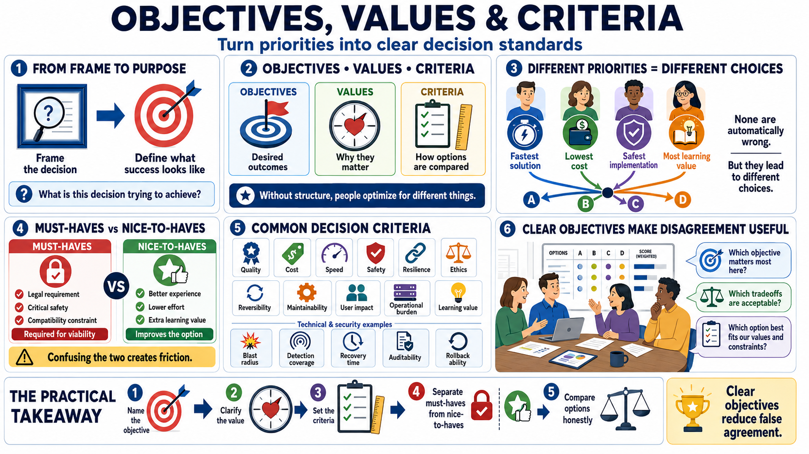

Objectives, Values, and Criteria
Connecting to LMS... Progress: in progress

Narration
Once the decision is framed, the next question is what the decision is trying to achieve. Objectives are the outcomes or conditions that matter. Values explain why those outcomes matter. Criteria turn those objectives into standards that can be used to compare options. Without that structure, teams may appear to agree while each person is optimizing for something different.
For example, one person may want the fastest solution, another may want the lowest cost, another may want the safest implementation, and another may want the most learning value. None of those priorities is automatically wrong. The problem is that they produce different choices. Decision science makes the priorities visible so the tradeoffs can be discussed honestly instead of hidden inside vague words like best, strategic, or efficient.
It helps to separate must-haves from nice-to-haves. A must-have is a condition an option must satisfy to remain viable, such as a legal requirement, a critical safety requirement, or a compatibility constraint. A nice-to-have improves the option but does not define viability by itself. Confusing the two creates friction. Teams either reject workable options too early or accept options that fail important requirements.
Common criteria include quality, cost, speed, safety, resilience, ethics, reversibility, maintainability, user impact, operational burden, and learning value. In technical and security work, criteria might include blast radius, detection coverage, recovery time, auditability, and ability to roll back. In learning design, criteria might include clarity, accessibility, engagement, transfer, and assessment quality.
Unclear objectives create false agreement. Everyone nods until the real tradeoff appears. Clear objectives do not remove disagreement, but they make disagreement useful. They let the group ask which objective should dominate in this case, which tradeoffs are acceptable, and which option best fits the values and constraints of the decision.